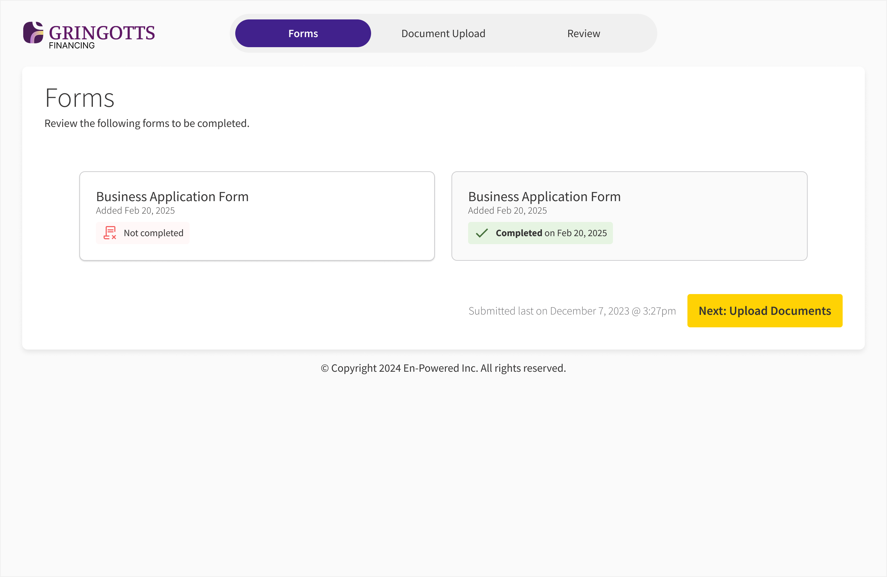

1. Landing Modal
When I joined, the product was focused on “Energy Partners,” the middlemen selling energy upgrades. But after deep discovery, we realized the partner wasn’t the bottleneck. The Lender was.
The Shift: We pivoted Arlo from a sales-support tool for partners into a Lender-first financial engine. This required a total overhaul of the mental model: moving from a “Project” view to a “Portfolio” view, where a single lender (like Gringotts Finance) could manage hundreds of multi-million dollar deals across diverse partners.

Before moving pixels in Figma, I had to untangle the “One-to-Many” relationship of commercial finance. A single deal might have one lead borrower, three business entities, and two personal guarantors.
My sketches focus on Information Hierarchy. I didn’t just design a list; I designed a permissions-based ecosystem. I mapped out how data would roll up from an individual’s tax return to a business’s balance sheet, ensuring the lender never lost context of the “Action” at the project level.


The Strategy: The “Email Tsunami” started at the very beginning of the relationship. Lenders needed a professional, branded jumping-off point that didn’t feel like a generic file-sharing site.
The Design Decision: In these early sketches, I explored the “Portal Entry.” I wanted the landing experience to feel like an extension of the lender’s institution. I mapped out a “Direct-to-Deal” flow, where a borrower could land, see their specific deal’s progress, and immediately understand their “Next Best Action” without having to dig through an inbox.

Early on, the team was focused on AI document extraction. However, our discovery showed that “faster reading” didn’t matter if the borrower didn’t know what to upload in the first place.
I used these collaborative sketches to advocate for a Workflow-first MVP. We defined clear roles: who initiates the request and who tracks the hurdle. We decided that “Progress Feedback” was our primary value prop. If the borrower felt the system responding to them, they would finish the application. Working with the Product Manager (and founder) of Arlo, we realized that “faster reading” didn’t matter if the “communication loop” was broken.

This screen replaced the email tsunami.
Comprehensive portfolio review and checklist verification interface for lenders.


Document analysis takes time. If a user uploads a 100-page bank statement, they shouldn't stare at a spinning wheel. I mapped out the system feedback loops: showing progression, providing instant success flags for uploads, and letting the user know they could safely navigate away while the AI processed their files in the background.


We learned that forcing users to rename or organize files causes drop-off. Instead, we let them drag-and-drop the chaos. Arlo's AI analyzes, renames, and classifies the files in real-time.

Senior designers don't just design for the “Happy Path.” In lending, the “No” is just as important as the “Yes.”
I mapped out the logic for an empathetic denial. If a borrower's revenue is too low, the UI explains why and provides a path for future planning. This prevents “Dead Ends” and protects the lender's brand reputation, ensuring that a rejected applicant today can still be a customer tomorrow.

Based on our insights, I set out to make deal progress clear and simple: empower users with clarity and control.
Old design lacked clear indications of progress, leaving analysts in the dark about who needed to act next.

A simple progress bar and clear status that indicate how much of the application the borrower had completed.

The Strategy: As we pivoted to a Lender-first model, the UI had to shift from managing a single “Project” to managing a massive portfolio. A lender might be tracking 150 concurrent deals across 20 different partners.
The Design Decision: I designed a robust search and filtering system that allowed lenders to parse deals by “Stage,” “Entity Name,” or “Financial Volume” instantly. By highlighting search terms in bold within the results, I reduced the cognitive load for loan officers who were context-switching between “Acme Corp” and “Vanguard Ventures” dozens of times a day. This wasn't just a utility; it was a speed-to-market advantage.
Streamlined application and tracking interface for borrowers.
1. Landing Modal

2. Form Completed

3. Document Issues

4. Completed Status

5. Application Review

6. Addressing Missing Info
Customization panels for automated email alerts, active user management, and nudges.